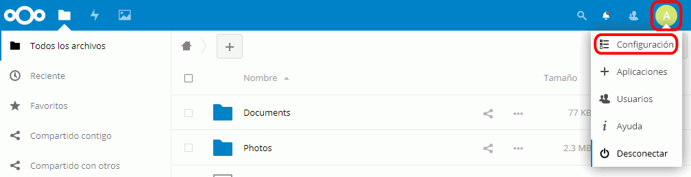
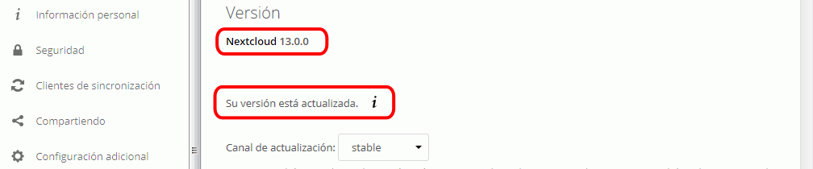

Nextcloud (1) 3 - Actualizar Nextcloud
- Entre en Nextcloud como administrador. Haga clic en el nombre del usuario (arriba a la derecha) y seleccione la opción Administración:

- Compruebe que existe una actualización disponible:

- Antes de hacer clic en el botón "Abrir el actualizador", ejecute el script que cambia los permisos:
sudo docker exec -it nc sh -c 'set-nc-perms upgrade' - Haga clic en el botón "Abrir el actualizador":
- Haga clic en el botón "Start update":
 En mi caso no he podido realizar la actualización porque me sale el siguiente mensaje de errror:
En mi caso no he podido realizar la actualización porque me sale el siguiente mensaje de errror:
- Ejecute el script que restaura los permisos:
sudo docker exec -it nc sh -c 'set-nc-perms runtime'